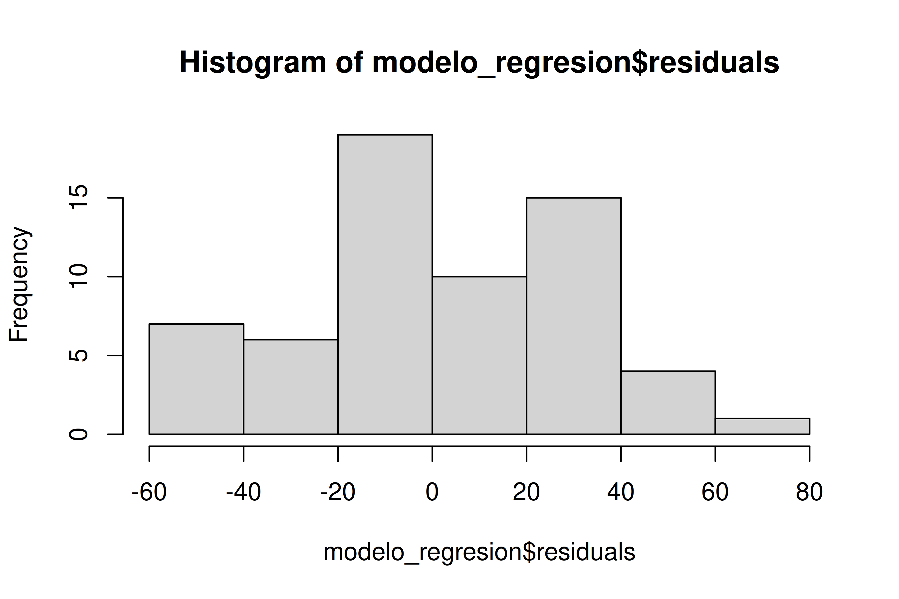
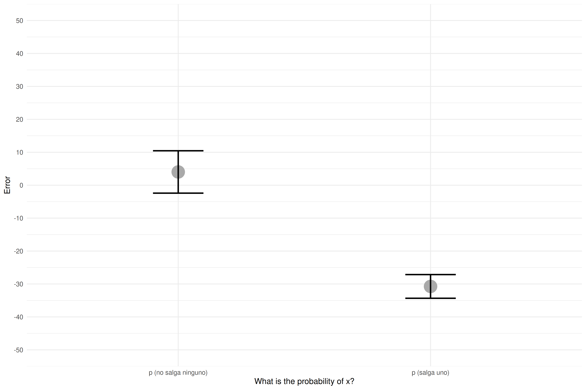
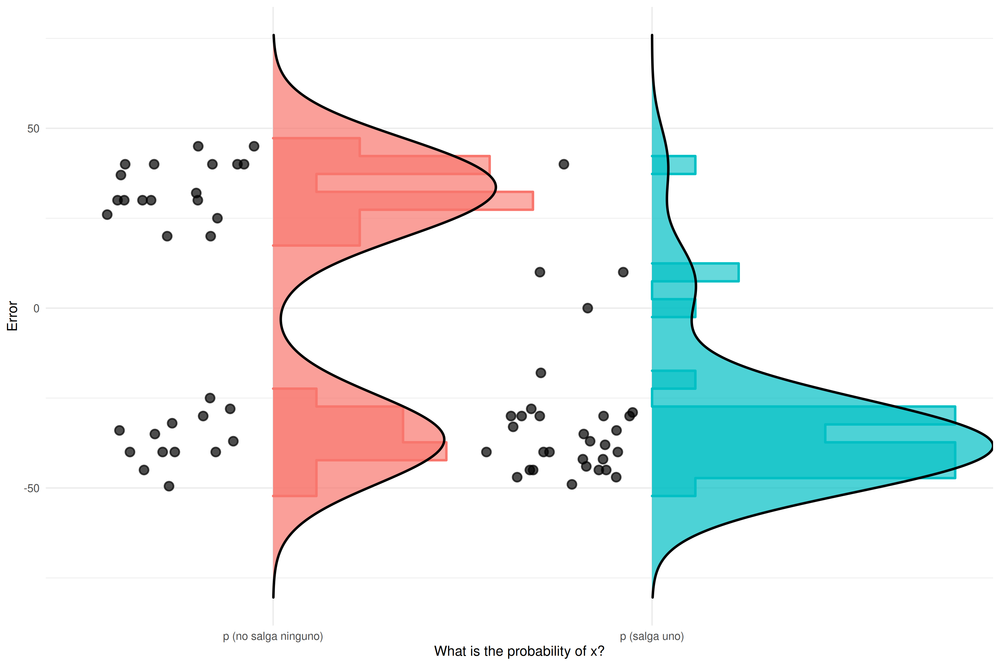
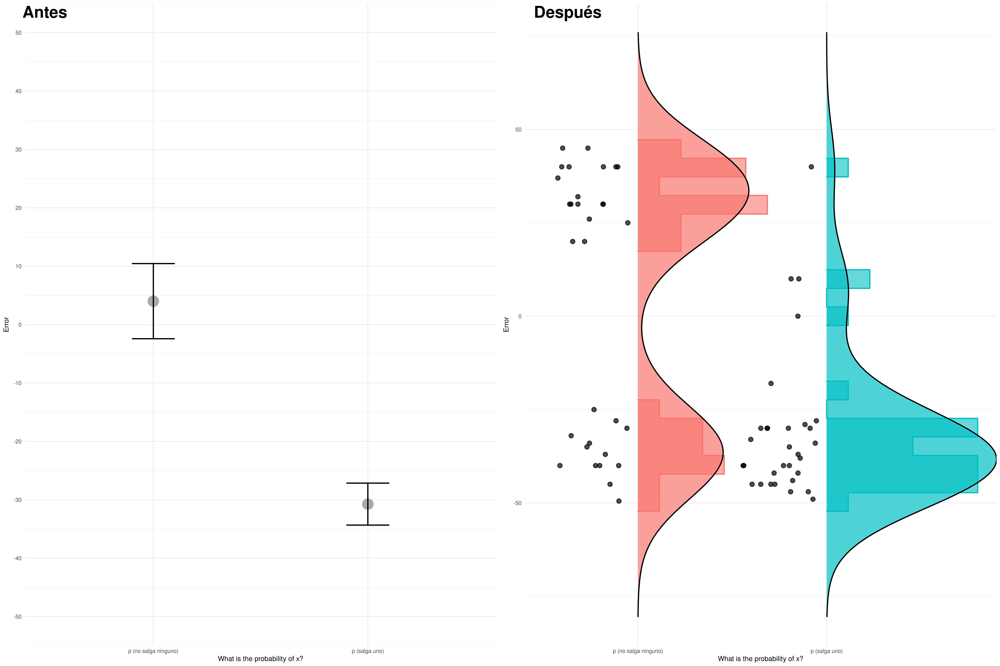

1 Introducción a R
1.1 Introducción: ¿por qué la visualización de datos es importante?
“These 13 datasets (the Datasaurus, plus 12 others) each have the same summary statistics (x/y mean, x/y standard deviation, and Pearson’s correlation) to two decimal places, while being drastically different in appearance.” (Matejka, J., & Fitzmaurice, G., 2017).

1.1.1 Ejemplo del mundo real: ¿cuantos temas deberia estudiar?
Este ejemplo viene de un experimento que realizamos junto con Carlos Santamaría hace algún tiempo. Presentamos una tarea sobre cálculo de probabilidades a personas que estaban entrando a un examen para convertirse en trabajadores del estado.
Simplificando algo, digamos que la materia para el examen eran 80 temas. No es posible estudiar con profundidad todos los temas, así que los opositores se concentraban en un subconjunto de esos temas (e.g. 30 de 80). Al empezar el examen, se seleccionaban al azar 5 de los 80 temas, y cada persona elegía uno de ellos para desarrollar.
Abajo se puede ver como cambia la probabilidad de que uno de los temas estudiados aparezca dentro de los 5 seleccionados al azar. Con 30 de los 80 temas estudiados, la probabilidad de que uno de ellos salga en la prueba es del 91%. Si estudiáramos 47, subiríamos a una probabilidad del 99%.
La esencia del dilema al que se enfrentan los opositores se puede condensar en este gráfico. La ganancia (en probabilidad de que salga un tema estudiado) va disminuyendo con cada tema adicional, hasta llegar a un punto en el que es negligible. El problema es que esto es muy poco intuitivo…
En el experimento le preguntamos a los participantes por la probabilidad de que les apareciera alguno de los temas estudiados en la prueba. Comparamos las siguientes dos preguntas:
- ¿Cuál es la probabilidad de que salga uno de los temas que has estudiado?
- ¿Cuál es la probabilidad de que no salga ninguno de los temas que has estudiado?
Miramos el error promedio en función de la pregunta (cuanto se han alejado de la probabilidad correcta), y vimos que nuestra manipulación había tenido un efecto considerable:
| Question | Error_promedio | SD | N |
|---|---|---|---|
| p (salga uno) | -30.741936 | 20.01494 | 31 |
| p (no salga ninguno) | 4.016129 | 35.82469 | 31 |
Hay una diferencia notable entre condiciones. Pasamos de un error promedio del -30.7% a tan solo 4%, simplemente cambiando la pregunta. Hagamos un sencillo análisis de regresión para ver si la diferencia es significativa, y cuanta varianza explica nuestro modelo.
| Error | |||
| Predictors | Estimates | CI | p |
| (Intercept) | 4.02 | -6.41 – 14.44 | 0.444 |
| Question [p (salga uno)] | -34.76 | -49.50 – -20.02 | <0.001 |
| Observations | 62 | ||
| R2 / R2 adjusted | 0.270 / 0.258 | ||
#>
#> Shapiro-Wilk normality test
#>
#> data: modelo_regresion$residuals
#> W = 0.96215, p-value = 0.0532
Todo es hermoso. Tenemos un efecto claramente significativo de la pregunta (y con un R2-ajustado de .258, no está nada mal), y además, nuestro modelo no incumple el supuesto de normalidad de residuos (¡por los pelos!).
Nota importante sobre las pruebas de normalidad. Hack click para leerme.
Las pruebas de normalidad son muy sensibles al tamaño de la muestra. Como el tamaño de la muestra es pequeño en este caso, no es esperable que el resultado sea significativo.
Preparamos un plot con promedios y barras con error standard para nuestro paper.

Estamos listos para escribir el paper. Preparemos la tabla con descriptivos…
| Question | Error_promedio | SD | N |
|---|---|---|---|
| p (salga uno) | -30.741936 | 20.01494 | 31 |
| p (no salga ninguno) | 4.016129 | 35.82469 | 31 |
Es curioso que la desviación estándar sea mayor en el grupo con menos error promedio… Visualicemos las respuestas de todos los participantes, junto con la distribución de los datos.

Como se puede apreciar en la gráfica, cuando usamos la pregunta ¿Cuál es la probabilidad de que no salga ninguno de los temas que has estudiado? no estamos reduciendo el error, sino convirtiendo una distribución de respuestas unimodal en bimodal.
TLDR: La manera en la visualizamos la información determina las conclusiones a las que llegamos. En una sola gráfica:

Moraleja: es importante mostrar los datos individuales y/o la distribución de los datos

1.2 ¿Por qué R?
R es uno de los programas para data science mas populares, especialmente usado en la academia. El numero de paquetes que ofrecen funcionalidades de todo tipo no ha dejado de crecer. En 2024 el numero de paquetes en R-cran ha superado los 25,000, y el ritmo de crecimiento nos acerca a la singularidad… ;)

Además de lo anterior, R es un programa de código abierto (algo esencial para poder hacer ciencia reproducible), con una comunidad de usuarios muy acogedora, y con un importante foco en la inclusividad.
La importancia de la comunidad es difícil de apreciar. Por ejemplo, es relativamente habitual que uno abra un issue en Github pidiendo una nueva característica en un paquete, y que los creadores la implementen (e.g. correlation, gtsummary, rorcid), que uno reporte un error y lo corrijan (e.g. sjPlot, gtsummary), recibir correcciones y mejoras en tus repositorios (e.g. html2latex, 2019-Chile), o poder contribuir a repositorios de otros (e.g. jsPsych, gtsummary).
Sus funciones de visualización son muy potentes (ver la r-graph-gallery para algunos ejemplos), siendo usadas como herramienta principal en medios como la BBC.

No menos importante, hay una gran cantidad de cursos, tutoriales, presentaciones y libros de una calidad excelente, con los que podemos aprender de manera autónoma. Por ejemplo:
- psyTeachR team at the University of Glasgow
- A Gentle Guide to the Grammar of Graphics with ggplot2
- resulumit.com Rmd workshop
- R for Data Science
- Advanced R
Para ver una compilación de libros disponibles (> 300): Big Book of R
1.3 ¿Para qué sirve R?
Con R puedes recoger datos interactivamente con shiny, preparar datos (o extraerlos de paginas web con rvest o RSelenium), visualizar datos estáticos con ggplot, animarlos con gganimate, visualizarlos con interactivamente con plotly o shiny.
Puedes también analizar los datos con todas las técnicas imaginables, desde anovas con afex a modelos mixtos con lmer y/o afex, pasando por meta-análisis con metafor, SEM, Path analysis, mediación, con lavaan, análisis Bayesianos con brms o bayesfactor, y un larguísimo etc.
Puedes llevar tus visualizaciones y análisis a reportes automáticos en múltiples formatos (pdf, html, docx) con Rmarkdown, o quarto, crear libros como este con bookdown, páginas web con blogdown o distill, e incluso papers completamente reproducibles (preparación y análisis de datos) en formato APA con papaja.
1.3.1 Bienvenida al tidyverse

El tidyverse es un conjunto de paquetes que nos permitirán hacer de manera (habitualmente) intuitiva muchas tareas de preparación y visualización de datos.
1.3.1.1 Tidyverse vs Base R
Muchas de las funciones que existen en el Tidyverse tienen un equivalente en base-R (la instalación por defecto de R). El Tidyverse tiene ventajas y desventajas. La ventaja fundamental es que el código resulta (habitualmente) más fácil de leer, los nombres de las funciones son más intuitivos, y la forma de hacer las cosas tiene a ser consistente. La desventaja fundamental es que incrementamos el numero de dependencias (paquetes) de nuestro código.
Veamos un ejemplo extraído de aquí.
La misma operación con base-R o con tidyverse:
Filter rows with conditions evaluated within groups: iris flowers with maximum “Petal.Width” for each “Species”
Tidyverse
Base-R
waldo::compare(result1, result2, ignore_attr = TRUE)
#> ✔ No differences
result1
#> # A tibble: 5 × 5
#> # Groups: Species [3]
#> Sepal.Length Sepal.Width Petal.Length Petal.Width Species
#> <dbl> <dbl> <dbl> <dbl> <fct>
#> 1 5 3.5 1.6 0.6 setosa
#> 2 5.9 3.2 4.8 1.8 versicolor
#> 3 6.3 3.3 6 2.5 virginica
#> 4 7.2 3.6 6.1 2.5 virginica
#> 5 6.7 3.3 5.7 2.5 virginica1.3.2 Antes de empezar
Programar es como tener un superpoder. Pero llegar adquirir ese superpoder es muy difícil. Todos necesitamos ayuda. Contar con una comunidad robusta con la que compartir, preguntar, contribuir, hace el proceso más agradable, y aumenta tus probabilidades de éxito.
Inicialmente “programaremos” usando la técnica conocida como Copy and paste programming, y poco a poco aprenderemos a descomponer el código, adaptarlo a nuestras necesidades, hasta que en algún momento lleguemos a escribir código propio. Este manual os debería servir de referencia para las primeras fases. Familiarizaros con su estructura, y acostumbraros a copiar, pegar y correr el código que aparece en los recuadros grises.

1.3.3 Recursos adicionales
Hay algunos recursos que son imprescindibles. Nadie sabe como los antiguos podían programar antes de la llegada de Stackoverflow:
Google: avoid scientific notation R:
options(scipen=999)
Y otros recursos que resultan muy útiles:
-
Mastodon! Por ejemplo:
-
@thomas_mock (#TidyTuesday)
-
@rivaquiroga
-
@RLadiesGlobal
- @coolbutuseless
-
@thomas_mock (#TidyTuesday)
Webs como R bloggers
Bibliografía
Matejka, J., & Fitzmaurice, G. (2017, May). Same stats, different graphs: Generating datasets with varied appearance and identical statistics through simulated annealing. In Proceedings of the 2017 CHI Conference on Human Factors in Computing Systems (pp. 1290-1294). ACM.
https://bbc.github.io/rcookbook/
https://github.com/bbc/bbplot
Big Book or R : https://www.bigbookofr.com/index.html